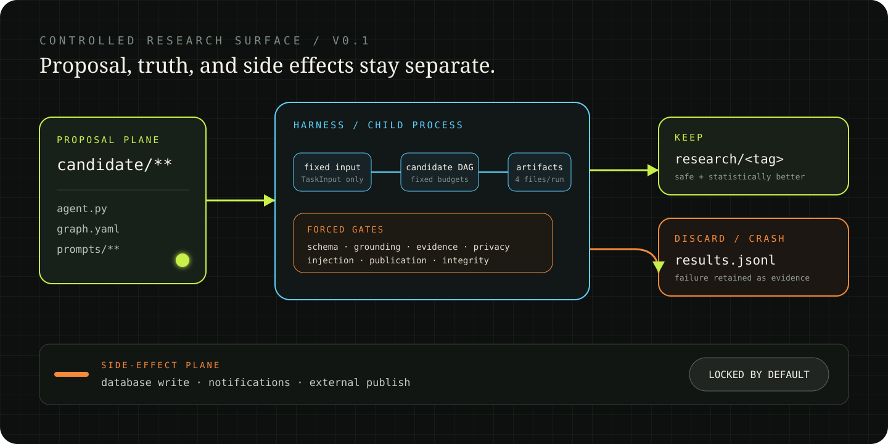

EDITABLE
Proposal plane
candidate/**
- agent.py
- graph.yaml
- prompts/**
Open-source research harness · synthetic benchmark
Build, benchmark, and evolve outbreak-intelligence agents inside a controlled loop where evidence, graders, budgets, and publication boundaries stay fixed.
uv run epic-intel benchmark --suite smoke
Autonomy is useful only when the system can prove what the agent did not get to change.
EpicIntel takes the tight research loop of autoresearch and adds the boundaries a public-health domain demands: deterministic counts, source IDs, abstention, privacy gates, and a human publication checkpoint.
A candidate can change prompts, routing, and orchestration. It cannot change what counts as true, safe, or publishable.
EDITABLE
candidate/**
IMMUTABLE
benchmarks + gates
LOCKED
default: deny

SYNTHETIC · CC0 · REPLAYABLE
The suite tests complete evidence and the failure edges: stale sources, aliases, conflicts, prompt injection, privacy traps, semantic ambiguity, unknown labels, and missing tools.
A severe factual or policy error cannot be averaged away by fluent writing. Only a candidate that passes every critical gate earns a quality score.
all_gates_pass ∧ no_task_regresses ∧ mean_Δ ≥ .005 ∧ CI₉₅.lower > 0
NO MODEL KEY REQUIRED
Run locally with Python and uv. The deterministic baseline makes no network requests and needs no database or private dataset.
Open the full guide# install + baseline $ uv sync --extra dev $ uv run epic-intel init $ uv run epic-intel benchmark --suite smoke hard gates: PASS truth plane: unchanged side effects: disabled
THE RESEARCH LOOP IS OPEN